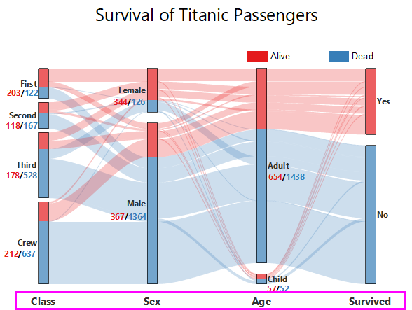

|
Sankey
|
Sankey-Karte
|
|
Alluvial
|
Netzwerk
|
Legen Sie fest, wie die Beschriftungen für die Knoten gezeigt werden sollen. Hier können zwei Beschriftungsarten mit Knoten gezeigt werden:
Wählen Sie diese Option, um den Kategorienamen für die Knoten zu zeigen. Sie können entscheiden, wie Sie sie anzuzeigen, außerhalb oder innerhalb der Knoten, Schriftarten, Textumbruch oder nicht und ob eine andere Spalte als Anzeigename verwendet werden soll.
Falls Sie Namen außerhalb der Knoten zeigen, können Sie die Position außerhalb Knoten und den Versatz wählen, um die Position der Beschriftungen zu steuern.
Bei einer Sankey-Karte können Sie den Text des Namens mit einer festgelegten Anzahl von Zeichen über das Kombinationsfeld Textumbruch nach Anzahl der Zeichen umbrechen. Der Standardwert für diese Option ist 15.
Wählen Sie diese Option, um den Gesamtwert für die Knoten zu zeigen. Sie können entscheiden, wie Sie sie anzuzeigen, äußere oder innere Knoten, Schriftarten, numerisches Format, Präfix/Suffix oder nicht.
Für ein Alluvialdiagramm gibt es keine eigentlichen Werte für Knoten. Daher können Sie die Werte für Anzahl oder/und Prozent als Beschriftungen verwenden. Sie können auch über die Dezimalstellen für die Prozentwerte entscheiden.
Sollten Sie ausgewählt haben, Name oder Gesamtwert als die Beschriftungen der Knoten zu verwenden, und festgelegt haben, die Beschriftungen außerhalb der Knoten zu zeigen, können Sie die Position der Beschriftungen außerhalb der Knoten weiter näher bestimmen:
Die Beschriftungen werden mit einem Versatz in ihre jeweiligen Richtungen gezeigt.
Wenn Sie Name und Gesamtwert wählen und dazu eine Position (Knoten außen oder Knoten innen), können Sie dieses Bedienelement verwenden, um diese Angaben zusammen anzuzeigen, Name zuerst oder Wert zuerst. Sie können auch bestimmen, ob sie in einer Zeile angezeigt werden sollen, ob ein Trennzeichen zwischen ihnen stehen soll.
Legen Sie fest, wie die Beschriftungen für die Knoten in einem Netzwerkdiagramm gezeigt werden sollen. Sie können das Format und die Position der Beschriftungen benutzerdefiniert anpassen:
Wenn Sie die Knotenspalte und Knotenzeile nicht im Dialog plotnetwork festlegen, verwendet Origin standardmäßig den Knotenindex, um die Knoten zu beschriften.
Sie können eine andere Spalte im Zwischenarbeitsblatt plotnetwork auswählen, um die Knoten zu beschriften.
Legen Sie fest, ob die Beschriftungen für die Verbindungen in einem Sankey- oder Netzwerkdiagramm gezeigt werden sollen. Sie können die Position der Beschriftungen an den Anfang, in die Mitte oder an das Ende der Verbindungen setzen.
Außerhalb haben Sie die Möglichkeit, die Schriftart und das Anzeigeformat der Beschriftungen zu bestimmen. Über das Bedienelement Anzeige können Sie das Numerische Format sowie Präfix und Suffix für die Beschriftungen festlegen.
Sie können entscheiden, ob die Beschriftungen für alle Links angezeigt werden: Aktivieren Sie das Kontrollkästchen Verbergen, wenn weniger als (%) und geben Sie einen Prozentwert ein, um die Beschriftungen für die Links mit einem Gewicht, das kleiner ist als dieser Wert, zu verbergen.
Legen Sie fest, ob die Beschriftung für jede Zeichnung/Stufe im Alluvialdiagramm gezeigt werden soll.

Sie können einen vorhandenen Identifizierer auswählen, um die Zeichnungen zu beschriften, oder Sie können <Benutzerdefiniert> in der Auswahlliste Zeichnungsidentifizierer auswählen und eine Notation in das nächste leere Feld eingeben, um zu zeigen, was Sie zeigen möchten. Bitte beachten Sie, dass Sie in diesem leeren Feld eine Beispielnotation aus der Auswahlliste (mit dem nach unten weisenden Pfeil) oder aus der Ausklappliste (mit der Schaltfläche mit dem nach rechts weisenden Pfeil) auswählen können.
Sie können auch die Schriftart für die Beschriftungen, einen Versatz für die Position der Beschriftungen und einen Zeilenumbruch für den Beschriftungstext festlegen.
Legen Sie fest, wie die Beschriftung für die Zeichnungen/Schritte platziert werden soll. Aktuell können Sie die Beschriftungen unterhalb oder oberhalb von jeder Zeichnung anzeigen. Sie können das Bedienelement Versatz verwenden, um den vertikalen Versatz der Beschriftungen von den Zeichnungen anzupassen.